Ch 3: Data visualization
Key questions:
- 3.6.1. #6
- 3.8.1. #8
geom_point: Add points to plot, key args:x,y,size,stroke,colour,alpha,shapegeom_smooth: Add line and confidence intervals to x-y plot, can useseto turn off standard errors, can usemethodto change algorithm to make line.linetypeto make dotted line.geom_bar: Stack values on top of each to make bars (defaultstat = "count", can also change to"identity". May want to makey = ..prop..to show y as proportion of values).postion = "stacked"may take on values of “identity",”dodge", "fill"geom_count: Make bar charts out of discrete row values in dataframe.fillto fill bars,colourto outline.geom_jitter: likegeom_point()but with randomness added, usewidthandheightargs to control (could also usegeom_point()withposition = "jitter")geom_boxplot: box and whiskers plotgeom_polygon: Can use to plot points – use with objects created frommap_data()geom_abline: use argsinterceptandslopeto create linefacet_wrap: Facet multiple charts by one variable;scales = "free_x"(or “free”, or “free_y” are helpful)facet_grid: Facet multiple by charts by one or two variables:spaceis helpful arg (not withinfacet_wrap())stat_count: Likegeom_bar()stat_summary: can use to explicitly show ranges, e.g. with argsfun.ymin = min,fun.ymax = max,fun.y = medianstat_bin: Likegeom_histogram()stat_smooth: Sames asgeom_smoothbut can take non-standard geompositionadjustments:identity: ;dodge: ;fill: ;position_dodge;position_fill;position_identiy;position_jitter;position_stack;
- ways to override default mapping
coord_quickmap: Set aspect ratio for mapscoord_flip: Flip x and y coordinatescoord_polar: Use polar coordinates – don’t use much (should settheme(aspect.ratio = 1) +labs(x = NULL, y = NULL))coord_fixed: Fix x and y to be same size distance between tickmarks
ggplot(data = <DATA>) +
<GEOM_FUNCTION>(
mapping = aes(<MAPPINGS>),
stat = <STAT>,
position = <POSITION>
) +
<COORDINATE_FUNCTION> +
<FACET_FUNCTION>3.2: First steps
3.2.4
1. Run ggplot(data = mpg). What do you see?

A blank grey space.
2. How many rows are in mpg? How many columns?
## [1] 32## [1] 113. What does the drv variable describe? Read the help for ?mpg to find out.
Front wheel, rear wheel or 4 wheel drive.
4. Make a scatterplot of hwy vs cyl.

5. What happens if you make a scatterplot of class vs drv? Why is the plot not useful?
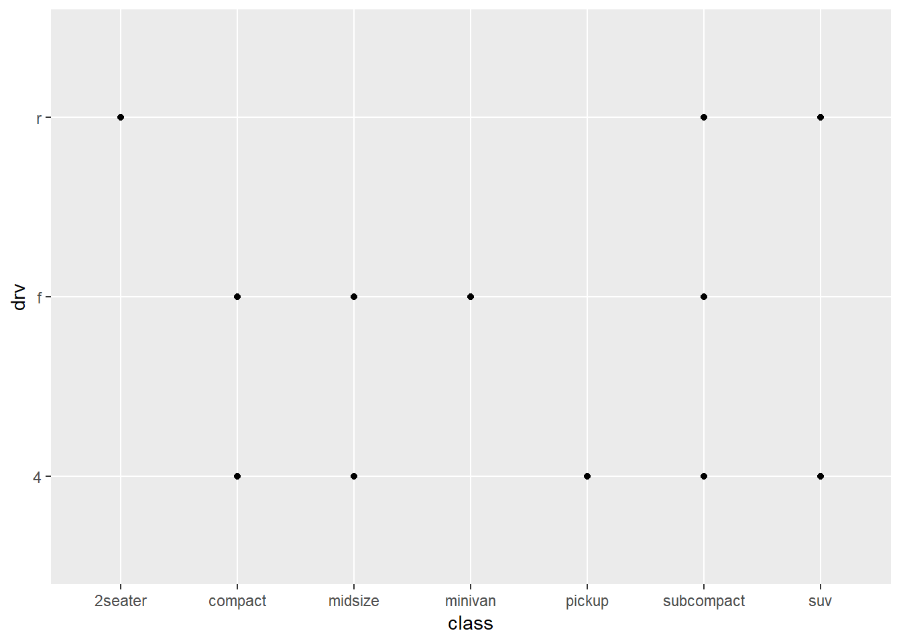
The points stack-up on top of one another so you don’t get a sense of how many are on each point.
Any ideas for what methods could you use to improve the view of this data?
Jitter points so they don’t line-up, or make point size represent number of points that are stacked.
3.3: Aesthetic mappings
3.3.1.
1. What’s gone wrong with this code? Why are the points not blue?

The color field is in the aes function so it is expecting a character or factor variable. By inputting “blue” here, ggplot reads this as a character field with the value “blue” that it then supplies it’s default color schemes to (1st: salmon, 2nd: teal)
2. Which variables in mpg are categorical? Which variables are continuous? (Hint: type ?mpg to read the documentation for the dataset). How can you see this information when you run mpg?
## # A tibble: 234 x 11
## manufacturer model displ year cyl trans drv cty hwy fl class
## <chr> <chr> <dbl> <int> <int> <chr> <chr> <int> <int> <chr> <chr>
## 1 audi a4 1.8 1999 4 auto~ f 18 29 p comp~
## 2 audi a4 1.8 1999 4 manu~ f 21 29 p comp~
## 3 audi a4 2 2008 4 manu~ f 20 31 p comp~
## 4 audi a4 2 2008 4 auto~ f 21 30 p comp~
## 5 audi a4 2.8 1999 6 auto~ f 16 26 p comp~
## 6 audi a4 2.8 1999 6 manu~ f 18 26 p comp~
## 7 audi a4 3.1 2008 6 auto~ f 18 27 p comp~
## 8 audi a4 q~ 1.8 1999 4 manu~ 4 18 26 p comp~
## 9 audi a4 q~ 1.8 1999 4 auto~ 4 16 25 p comp~
## 10 audi a4 q~ 2 2008 4 manu~ 4 20 28 p comp~
## # ... with 224 more rowsThe data is in tibble form already so just printing it shows the type, but could also use the glimpse and str functions.
3. Map a continuous variable to color, size, and shape. How do these aesthetics behave differently for categorical vs. continuous variables?
ggplot(data = mpg) +
geom_point(mapping = aes(x = cty, y = hwy, color = cyl, size = displ, shape = fl))
color: For continuous applies a gradient, for categorical it applies distinct colors based on the number of categories.
size: For continuous, applies in order, for categorical will apply in an order that may be arbitrary if there is not an order provided.
shape: Will not allow you to input a continuous variable.
4. What happens if you map the same variable to multiple aesthetics?
Will map onto both fields. Can be redundant in some cases, in others it can be valuable for clarity.

5. What does the stroke aesthetic do? What shapes does it work with? (Hint: use ?geom_point)
ggplot(data = mpg, mapping = aes(x = cty, y = hwy)) +
geom_point(shape = 21, colour = "black", fill = "white", size = 5, stroke = 5)
ggplot(data = mpg, mapping = aes(x = cty, y = hwy)) +
geom_point(shape = 21, colour = "black", fill = "white", size = 5, stroke = 3)
For shapes that have a border (like shape = 21), you can colour the inside and outside separately. Use the stroke aesthetic to modify the width of the border (can get similar effects by layering small point on bigger point).
6. What happens if you map an aesthetic to something other than a variable name, like aes(colour = displ < 5)?

The field becomes a logical operator in this case.
3.5: Facets
3.5.1.
1. What happens if you facet on a continuous variable?
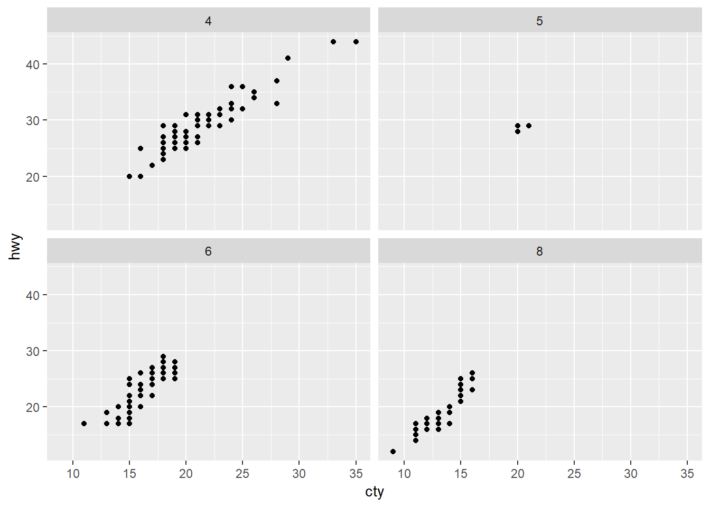
It will facet along all of the unique values.
2. What do the empty cells in plot with facet_grid(drv ~ cyl) mean?
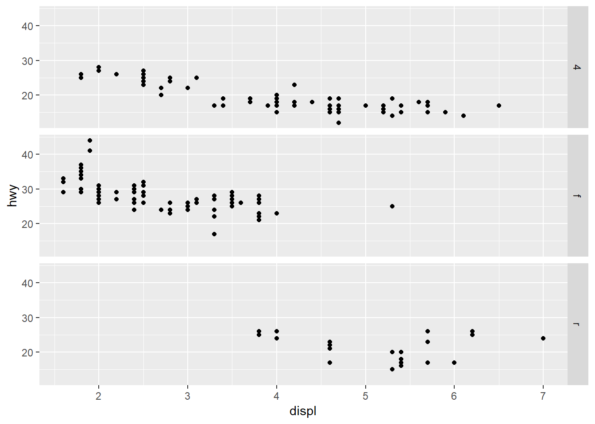
How do they relate to this plot?

They represent the locations where there is no point on the above graph (could be made more clear by giving consistent order to axes).
3. What plots does the following code make? What does . do?


Can use to specify if to facet by rows or columns.
4. Take the first faceted plot in this section:

What are the advantages to using faceting instead of the colour aesthetic? What are the disadvantages? How might the balance change if you had a larger dataset?
Faceting prevents overlapping points in the data. A disadvantage is that you have to move your eye to look at different graphs. Some groups you don’t have much data on as well so those don’t present much information. If there is more data, you may be more comfortable using facetting as each group should have points that you can view.
5. Read ?facet_wrap. What does nrow do? What does ncol do? What other options control the layout of the individual panels? Why doesn’t facet_grid() have nrow and ncol argument?
nrow and ncol specify the number of columns or rows to facet by, facet_grid does not have this option because the splits are defined by the number of unique values in each variable. Other important options are scales which let you define if the scales are able to change between each plot.
6. When using facet_grid() you should usually put the variable with more unique levels in the columns. Why?
I’m not sure why exactly, if I compare these, it’s not completely unclear.
#more unique levels on columns
ggplot(data = mpg) +
geom_point(mapping = aes(x = cty, y = hwy)) +
facet_grid(year ~ class)
#more unique levels on rows
ggplot(data = mpg) +
geom_point(mapping = aes(x = cty, y = hwy)) +
facet_grid(class ~ year)
My guess though would be that it’s because our computer screens are generally wider than they are tall. Hence there will be more space for viewing a higher number of attributes going across columns than by rows.
3.6: Geometric Objects
3.6.1
1. What geom would you use to draw a line chart? A boxplot? A histogram? An area chart?
* geom_line
* geom_boxplot
* geom_histogram
* geom_area
+ Notice that geom_area is just a special case of geom_ribbon
Example of geom_area:
huron <- data.frame(year = 1875:1972, level = as.vector(LakeHuron) - 575)
h <- ggplot(huron, aes(year))
h + geom_ribbon(aes(ymin = 0, ymax = level))

# Add aesthetic mappings
h +
geom_ribbon(aes(ymin = level - 1, ymax = level + 1), fill = "grey70") +
geom_line(aes(y = level))

2. Run this code in your head and predict what the output will look like. Then, run the code in R and check your predictions.
ggplot(data = mpg, mapping = aes(x = displ, y = hwy, color = drv)) +
geom_point() +
geom_smooth(se = FALSE)## `geom_smooth()` using method = 'loess' and formula 'y ~ x'
3. What does show.legend = FALSE do? What happens if you remove it? Why do you think I used it earlier in the chapter?
ggplot(data = mpg) +
geom_smooth(
mapping = aes(x = displ, y = hwy, color = drv),
show.legend = FALSE
)## `geom_smooth()` using method = 'loess' and formula 'y ~ x'
It get’s rid of the legend that would be assogiated with this geom. You removed it previously to keep it consistent with your other graphs that did not include them to specify the drv.
4. What does the se argument to geom_smooth() do?
se here stands for standard error, so if we specify it as FALSE we are saying we do not want to show the standard errors for the plot.
5. Will these two graphs look different? Why/why not?
## `geom_smooth()` using method = 'loess' and formula 'y ~ x'
ggplot() +
geom_point(data = mpg, mapping = aes(x = displ, y = hwy)) +
geom_smooth(data = mpg, mapping = aes(x = displ, y = hwy))## `geom_smooth()` using method = 'loess' and formula 'y ~ x'
No, because local mappings for each geom are the same as the global mappings in the other.
6. Recreate the R code necessary to generate the following graphs.
## `geom_smooth()` using method = 'loess' and formula 'y ~ x'
## `geom_smooth()` using method = 'loess' and formula 'y ~ x'
## `geom_smooth()` using method = 'loess' and formula 'y ~ x'
## `geom_smooth()` using method = 'loess' and formula 'y ~ x'
ggplot(mpg, aes(displ, hwy))+
geom_point(aes(color = drv)) +
geom_smooth(aes(linetype = drv), se = FALSE)## `geom_smooth()` using method = 'loess' and formula 'y ~ x'
ggplot(mpg, aes(displ, hwy)) +
geom_point(colour = "white", size = 4) +
geom_point(aes(colour = drv))
3.7: Statistical transformations
3.7.1.
1. What is the default geom associated with stat_summary()? How could you rewrite the previous plot to use that geom function instead of the stat function?
The default is geom_pointrange, the point being the mean, and the lines being the standard error on the y value (i.e. the deviation of the mean of the value).
## No summary function supplied, defaulting to `mean_se()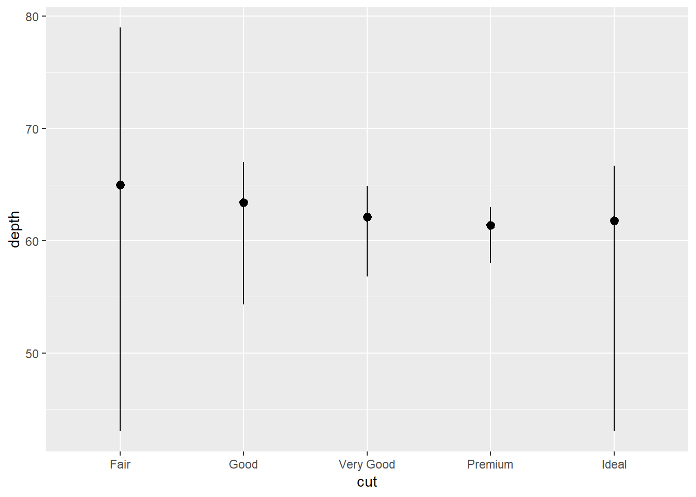
Rewritten with geom7:
## No summary function supplied, defaulting to `mean_se()
The specific example though is actually not the default:
ggplot(data = diamonds) +
stat_summary(
mapping = aes(x = cut, y = depth),
fun.ymin = min,
fun.ymax = max,
fun.y = median
)
Rewritten with geom:
ggplot(data = diamonds)+
geom_pointrange(aes(x = cut, y = depth),
stat = "summary",
fun.ymin = "min",
fun.ymax = "max",
fun.y = "median")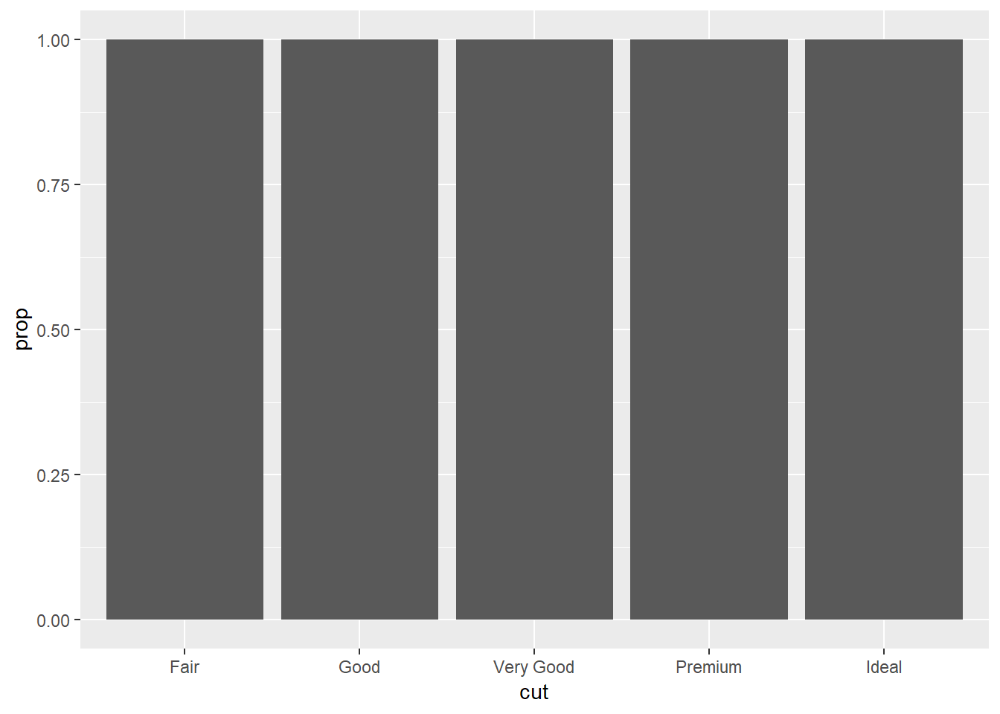
2. What does geom_col() do? How is it different to geom_bar()?
geom_col has "identity" as the default stat, so it expects to receive a variable that already has the value aggregated8
3.Most geoms and stats come in pairs that are almost always used in concert. Read through the documentation and make a list of all the pairs. What do they have in common?
4.What variables does stat_smooth() compute? What parameters control its behaviour?
- See here: http://ggplot2.tidyverse.org/reference/#section-layer-stats for a helpful resource.
- Also, someone who aggregated some online: http://sape.inf.usi.ch/quick-reference/ggplot2/geom9
5. In our proportion bar chart, we need to set group = 1. Why? In other words what is the problem with these two graphs?


Fixed graphs:

- For this second graph though, I would think you would want something more like the following:
ggplot(data = diamonds) +
geom_bar(mapping = aes(x = cut, fill = color), position = "fill")+
ylab("prop") # ylab would say "count" w/o this
(Which could be generated by this code as well, using geom_count())
3.8: Position Adjustment
Some “dodge”" examples:
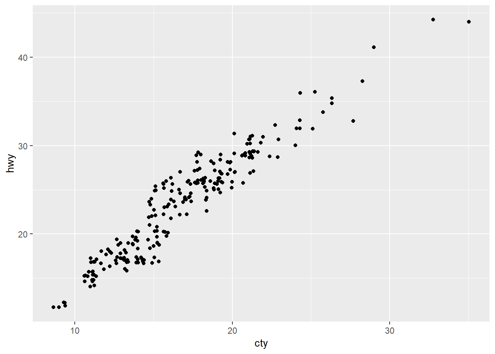
diamonds %>%
count(cut, color) %>%
ggplot(aes(x = cut, y = n, fill = color))+
geom_col(position = "dodge")
- the
interaction()function can also sometimes be helpful for these types of charts
Looking of geom_jitter and only changing width.

3.8.1.
1.What is the problem with this plot? How could you improve it?
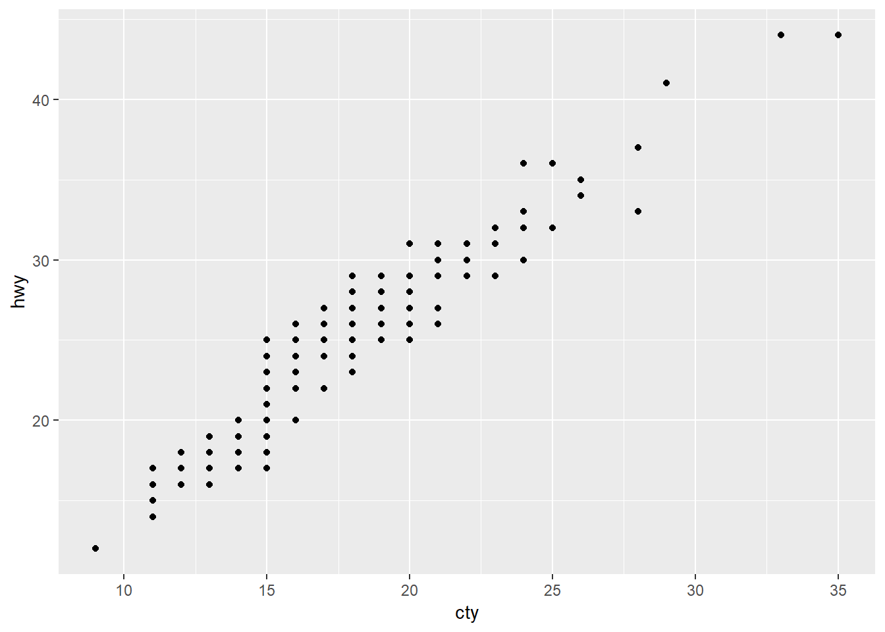
The points overlap, could use geom_jitter instead
2. What parameters to geom_jitter() control the amount of jittering?
height and width
3. Compare and contrast geom_jitter() with geom_count().
Take the above chart and instead use geom_count.
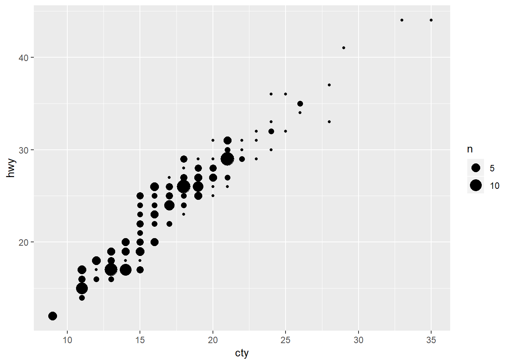
Can also use geom_count with color, and can use “jitter” in position arg.
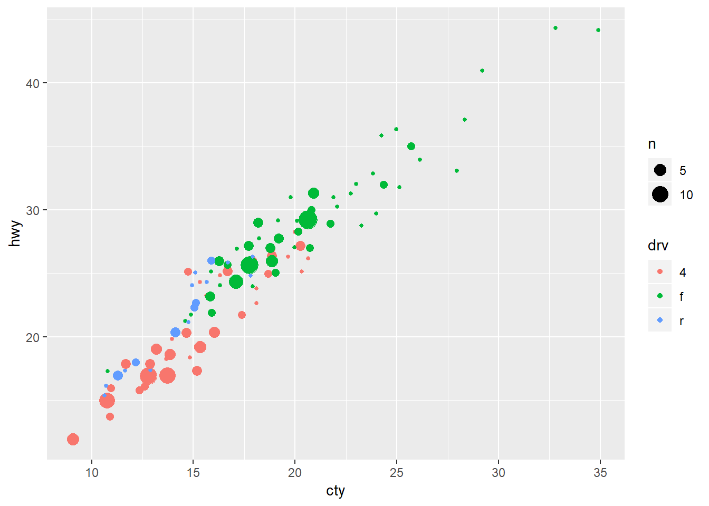
ggplot(data = mpg, mapping = aes(x = cty, y = hwy, colour = drv)) +
geom_jitter(size = 3, alpha = 0.3)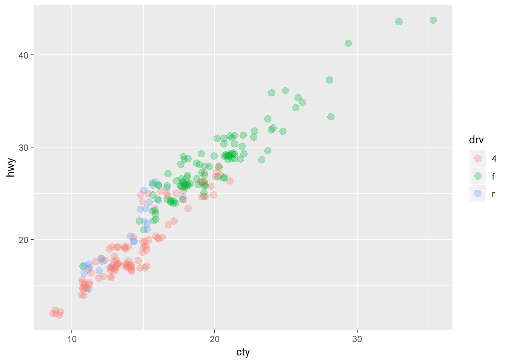
One problem with geom_count is that the shapes can still block-out other shapes at that same point of different colors. You can flip the orderof the stacking order of the colors with position = “dodge”. Still this seems limited.
## Warning: Width not defined. Set with `position_dodge(width = ?)`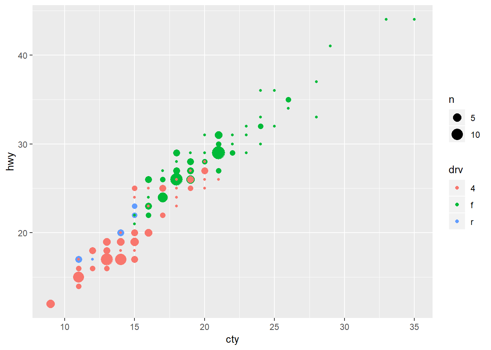
4. What’s the default position adjustment for geom_boxplot()? Create a visualisation of the mpg dataset that demonstrates it.
dodge (but seems like changing to identity is the same)
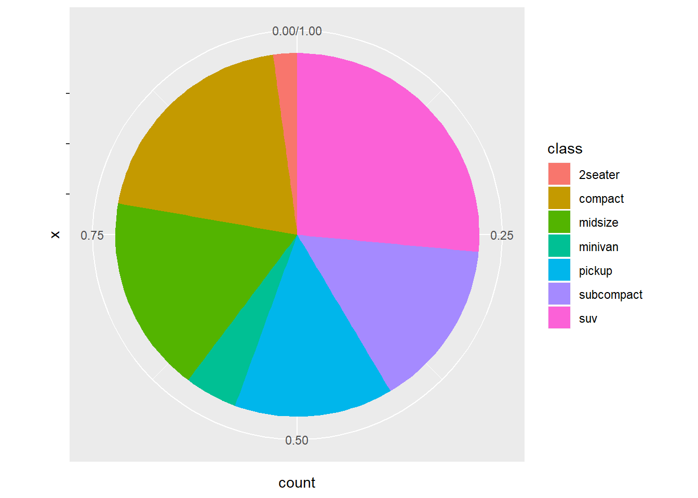
3.9: Coordinate systems
coord_flipis helpful, especially for quickly tackling issues with axis labels
coord_quickmapis important to remember if plotting spatial data.
coord_polaris important to remember if plotting spatial coordinates.
map_datafor extracting data on maps of locations
3.9.1.
1.Turn a stacked bar chart into a pie chart using coord_polar().
These are more illustrative than anything, here is a note from the documetantion:
NOTE: Use these plots with caution - polar coordinates has major perceptual problems. The main point of these examples is to demonstrate how these common plots can be described in the grammar. Use with EXTREME caution.
ggplot(mpg, aes(x = 1, fill = class))+
geom_bar(position = "fill") +
coord_polar(theta = "y") +
scale_x_continuous(labels = NULL)
If I want to make multiple levels:
ggplot(mpg, aes(x = as.factor(cyl), fill = class))+
geom_bar(position = "fill") +
coord_polar(theta = "y")
2. What does labs() do? Read the documentation.
Used for giving labels.
3. What’s the difference between coord_quickmap() and coord_map()?
The first is an approximation, useful for smaller regions to be proected. For this example, do not see substantial differences.
nz <- map_data("nz")
ggplot(nz,aes(long,lat,group=group))+
geom_polygon(fill="red",colour="black")+
coord_quickmap()

4. What does the plot below tell you about the relationship between city and highway in mpg? Why is coord_fixed() important? What does geom_abline() do?
geom_abline()adds a line with a given intercept and slope (either given byaesor byinterceptandslopeargs)
coord_fixed()ensures that the ratios between the x and y axis stay at a specified relationship (default: 1). This is important for easily seeing the magnitude of the relationship between variables.

Appendix
3.7.1.1 extension
## No summary function supplied, defaulting to `mean_se()
This seems to be the same as what you would get by doing the following with dplyr:
mpg %>%
group_by(cyl) %>%
dplyr::summarise(mean = mean(cty),
sd = (sum((cty - mean(cty))^2) / (n() - 1))^0.5,
n = n(),
se = sd / n^0.5,
lower = mean - se,
upper = mean + se) %>%
ggplot(aes(x = cyl, y = mean, group = cyl))+
geom_pointrange(aes(ymin = lower, ymax = upper))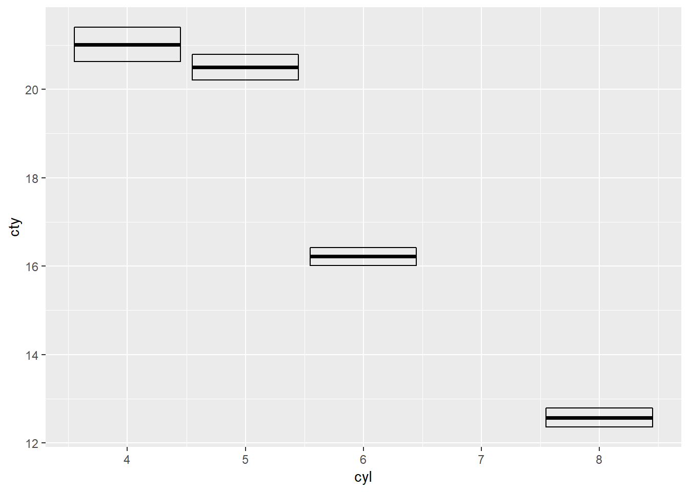
Other geoms you could have set stat_summary to:
crossbar:
## No summary function supplied, defaulting to `mean_se()
errorbar:
## No summary function supplied, defaulting to `mean_se()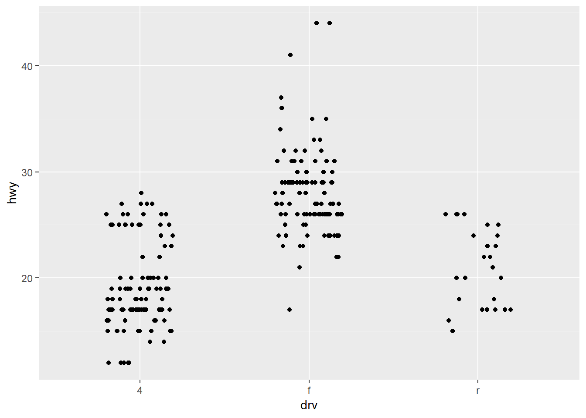
linerange:
## No summary function supplied, defaulting to `mean_se()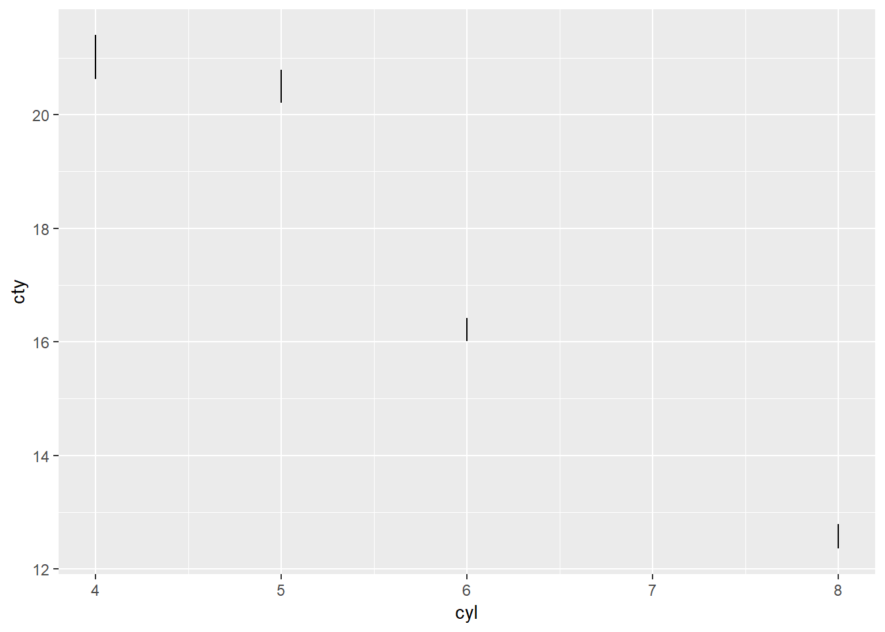
See 3.7.1.1 extension for notes on how to relate this to
dplyrcode.↩I often use this over
geom_barand do the aggregation withdplyrrather thanggplot2.↩Though it’s missing some very common ones like
geom_colandgeom_bar.↩